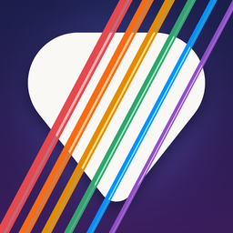
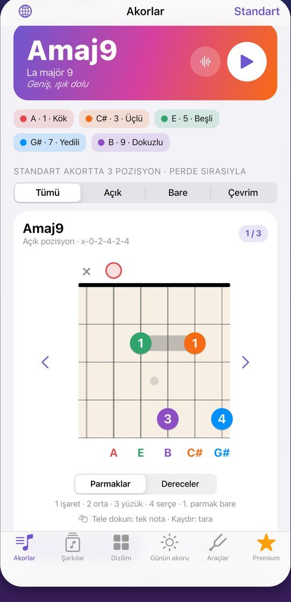
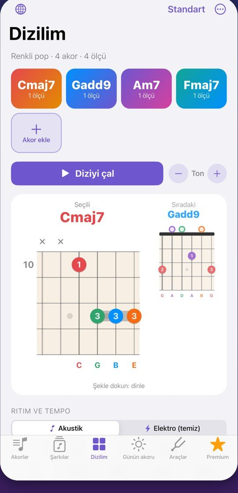
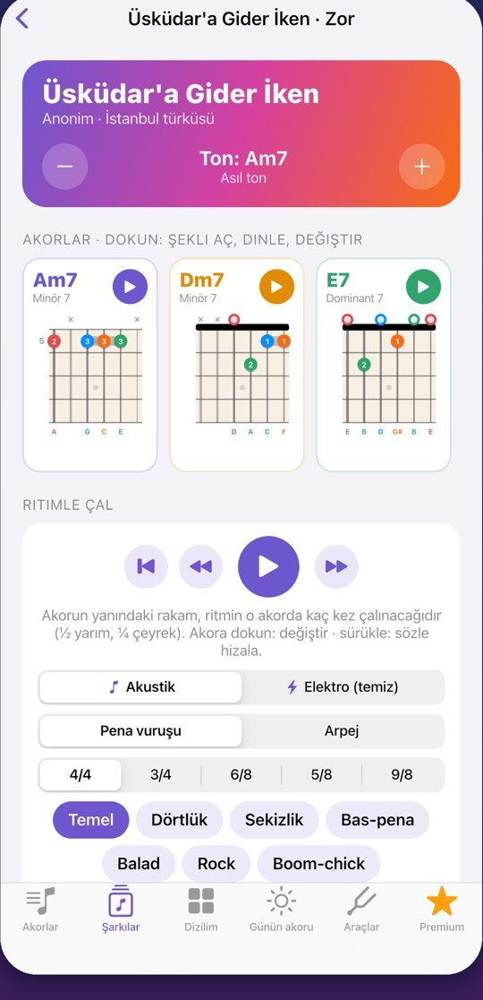
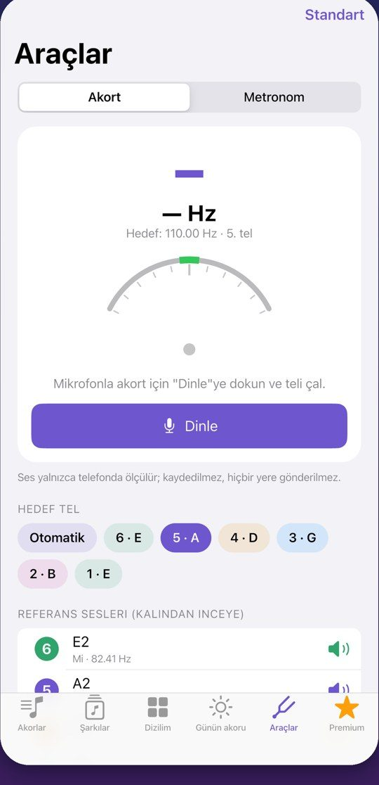

Renkli Gitar
Akor ve Şarkı
Akorlarına renk kat.
Ücretsiz indirilir · Uygulama içi satın alma içerir




Neler var?
- Renkli akor şemalarıHer nota görevinin renginde: kök, üçlü, beşli, yedili, dokuzlu.
- 41 akor türüMajör, minörden add9, maj7, m9'a kadar; her akorun farklı pozisyonları.
- Akor dizilimiRenkli akorları yan yana diz, döngüde çal, sıradaki akoru önceden gör.
- ŞarkılarKendi şarkını yaz, akorları hecesine yerleştir; hazır şarkılarda akorları renklendir.
- Akort ölçerMikrofonla tel tel akort; ses cihazda kalır.
- Metronom4/4'ten aksak 7/8 ve 9/8'e kadar ritimler.